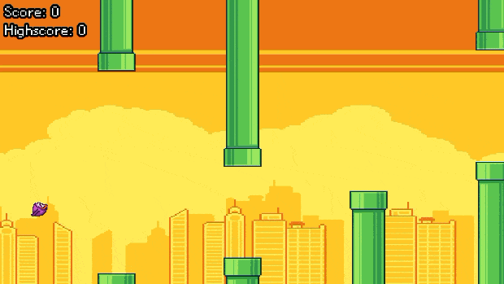

Flappy Bird Clone
A fast-paced arcade game inspired by Flappy Bird, created in C++ with SFML over 4 weeks as part of a small team project.
- Role
- Gameplay programmer
- Tools
- C++, SFML
- Team
- Team of 3
- Timeframe
- 4 weeks

About the project
This project was a short game development challenge where we built a Flappy Bird-inspired game in C++ using SFML. The goal was to improve our C++ skills and to produce a working 2D game within a short development window.
What I worked on
- I worked on the player movement and score progression systems, helping to make the gameplay feel smooth and consistent.
- I helped structure the codebase using object-oriented design, which made the project easier to maintain and expand as we developed it.
- One challenge I had to overcome was making the movement feel smooth, fair, and responsive. For example, the bird’s rotation had to match the Y velocity so the motion felt natural and consistent.